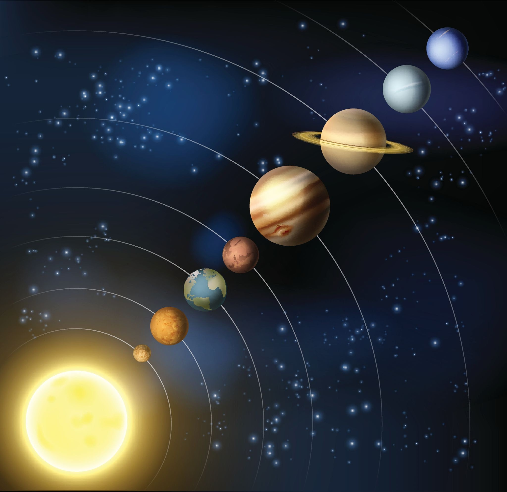

Estoy interesado en el desarollo web porque quiero crear programar una casa inteligente y quiero que se pueda manegar desde una pagina web
3 metas personales en este modulo
- Estilizar paginas web con solo CSS
- Aprender a hacer interfaces intuitivas para el usuario
- Agilizar la estructura de las paginas web con atajos Emmet y buena estructura semantica
5 paginas web favoritas
- Juego para mecanografiar mas rapido
- Para aprender a mecanografiar
- Entretenimiento
- Redes sociales
- Para saber si es navidad
El sistema solar
El sistema solar esta compuesto de 8 planetas siendo el tercer planeta, el planeta tierra.
El planeta mas caliente del sistema solar es venus y el mas frio es neptuno
A la mitad del camino de nuestra vida me encontré"Dante Aliguieri